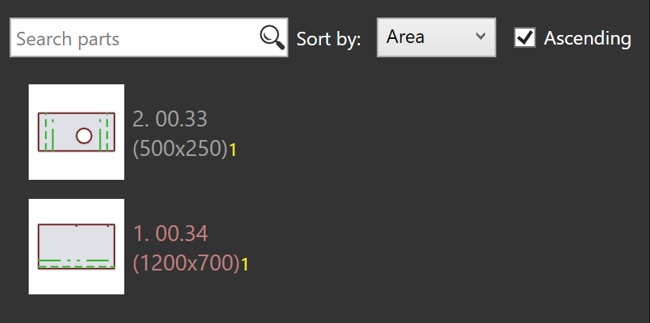

Opnieuw verpakken
TruSmartCAM heeft geen aparte Repacking module. In plaats daarvan wordt opnieuw verpakken afgehandeld via opties op jobniveau die flexibiliteit bieden in hoe onderdelen worden gecombineerd.
Er zijn drie manieren waarop opnieuw verpakken kan worden uitgevoerd.
-
Opnieuw verpakken met Stukken van meerdere jobs mengen.
-
Handmatig Opnieuw Verpakken met de Stukken toevoegen… Interactieve Wizard.
-
Handmatig Opnieuw Verpakken met TecZone.
Opnieuw verpakken met Stukken van meerdere jobs mengen
-
Om deze optie in te schakelen gaat u naar fabriek → instellingen → Job → Nestingsinstellingen → Stukken van meerdere jobs mengen.

-
Wanneer ingeschakeld, maakt deze optie het mogelijk dat onderdelen van verschillende jobs worden gegroepeerd tijdens automatisch nesten of interactief nesten, wat resulteert in een gecombineerde verpakking of nesten.
-
Bijvoorbeeld:
-
Job-1 heeft 1 onderdeel, Job-2 heeft 1 onderdeel.
-
Met Stukken van meerdere jobs mengen ingeschakeld, kan TruSmartCAM deze 2 onderdelen opnieuw verpakken in een enkel geoptimaliseerd nest.
-


-
Zonder deze optie blijven onderdelen van elke job gescheiden tijdens nesten/verpakken met verschillende layoutnamen.
-
Opnieuw verpakken kan ook handmatig worden uitgevoerd zonder deze optie in te schakelen.
Handmatig opnieuw verpakken met add parts interactieve wizard
-
Selecteer vanuit de layoutweergave de onderdelen die u opnieuw wilt verpakken.
-
Klik met de rechtermuisknop op het onderdeel en kies Stukken toevoegen… uit het layoutpaneel.

-
Volg de aanwijzingen in de wizard om het opnieuw verpakken te voltooien.
-
Kies Andere jobstukken weergeven en voeg ze toe aan de huidige job.

-
Controleer de wijzigingen en bevestig het opnieuw verpakken.

Voor meer details zie Add Parts.
Handmatig opnieuw verpakken met TecZone
-
Open de TecZone door te klikken op
 .
.

-
Klik in de TecZone interface op Add.

-
Een nieuw venster verschijnt waar u de onderdelen kunt selecteren die opnieuw moeten worden verpakt. Klik op Weergeven… en selecteer vervolgens Andere jobstukken. Na uw selectie te hebben gemaakt, klikt u op _Ophalen.

-
Een nieuw venster verschijnt waar u kunt definiëren waar het onderdeel opnieuw moet worden verpakt.

-
Klik op Wijzigingen opslaan in Praxis en de opnieuw verpakte layout zal beschikbaar zijn in TruSmartCAM.